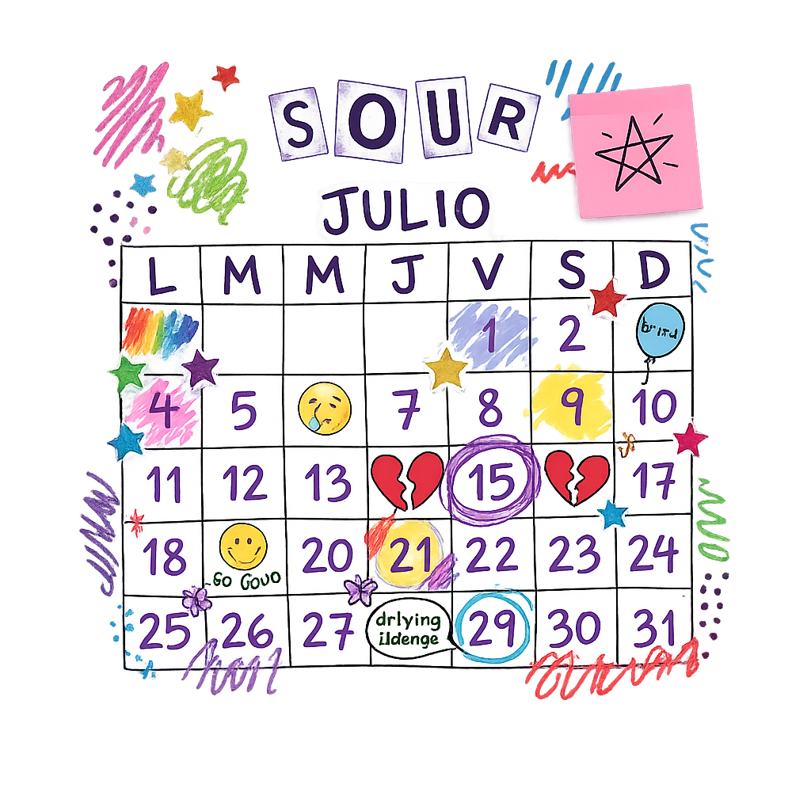
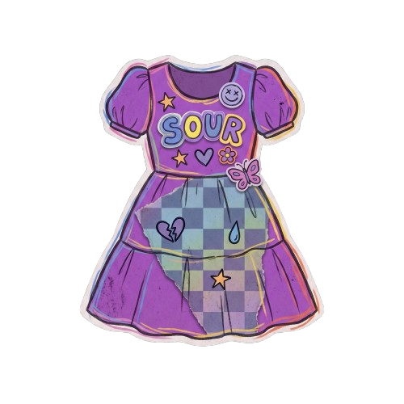

estás invitad@
¡es mi cumpleaños!
una invitación SOUR a mi fiesta 💜
desliza ↓
para la mejor fiesta del año
¡hoy es el día! 🎉
para que no falte nada

Fecha y hora
04 de Julio, 2026
4:00 PM

Código de vestimenta
Negro / Plata
confirmar asistencia límite: 30 de junio
confirmar por whatsapp